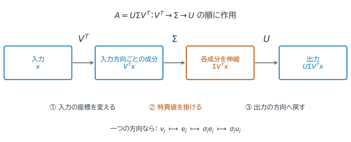
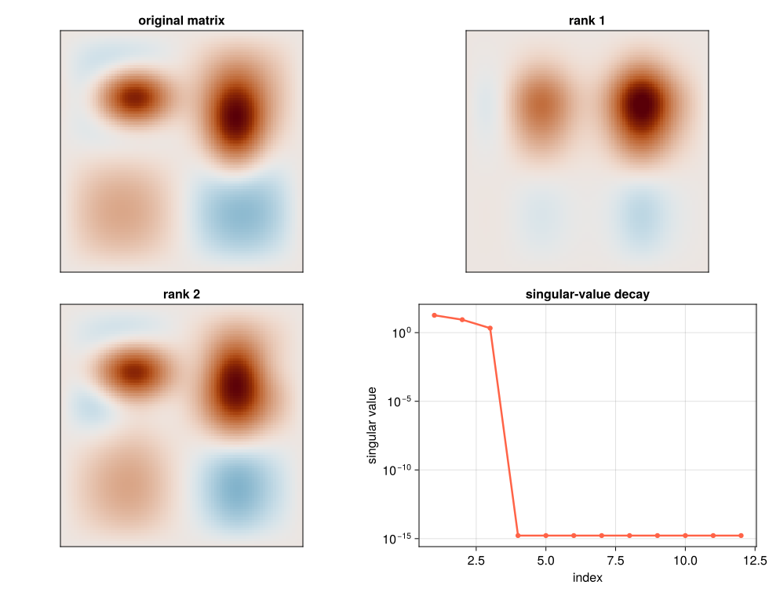

12. 特異値分解と低ランク近似#
第11章では正方行列の固有方向を調べた。第6章の設計行列や、観測を並べたデータ行列は長方形であり、入力と出力の次元が違う。この場合にも「どの入力方向が、どれだけ伸びるか」を調べられるだろうか。
特異値分解（singular value decomposition; SVD）は、長方形を含むすべての行列に存在し、階数、条件数、最小二乗、データ圧縮を統一的に記述する。本章後半では、SVDの考え方を多次元配列へ拡張する。
12.1. この章の目標#
SVDの因子と特異値の幾何学的意味を説明できる。
特異値から階数と2ノルム条件数を読み取れる。
最良低ランク近似を構成し、誤差と保存量を評価できる。
PCAとSVDの関係を説明できる。 多次元配列への拡張は章末の補足で扱う。
12.2. 特異値分解：入力と出力の方向を組にする#
例えば \(A=\begin{bmatrix}3&0\\0&1\\0&0\end{bmatrix}\) は、入力 \((1,0)^T\) を出力 \((3,0,0)^T\) へ、入力 \((0,1)^T\) を \((0,1,0)^T\) へ写す。入力は2次元、出力は3次元だが、直交する入力方向ごとの伸び率3と1を読むことができる。
一般の実行列 \(A\in\mathbb{R}^{m\times n}\) でも、入力側の単位ベクトル \(v_j\) と出力側の単位ベクトル \(u_j\) を選び、
と表せる。\(\sigma_j\) が特異値である。入力側・出力側それぞれで方向を直交させて並べると、
という 特異値分解（SVD） になる。完全な分解では \(U\) は \(m\times m\)、\(V\) は \(n\times n\) の直交行列、\(\Sigma\) は \(m\times n\) の対角形の行列である。


図 12.1 \(Ax=U\Sigma V^T x\) を計算する順序を左から右に描いた。まず入力を \(v_j\) 方向の成分に分け、各成分を \(\sigma_j\) 倍して、\(u_j\) 方向に組み立てる。長方形行列では \(\Sigma\) が成分数も合わせる。最初の例では、第1入力方向は3倍、第2入力方向は1倍され、出力の第3成分は0になる。#
Juliaの svd(A; full=false) は、薄いSVDとして \(U\) の必要な \(p\) 列、\(p\) 個の特異値、\(V^T\) の必要な \(p\) 行を返す。したがって因子の形は \(m\times p\)、\(p\times p\)、\(p\times n\) となる。薄いSVDは厳密な分解であり、まだ特異値を捨てた近似ではない。
複素行列では転置 \(V^T\) を共役転置 \(V^*\) に置き換える。Juliaの F.Vt はこの転置（複素数なら共役転置）を表し、F.S は対角行列ではなく特異値の配列である。
using LinearAlgebra, Random, Statistics
A = [3.0 0.0; 0.0 1.0; 0.0 0.0]
F = svd(A; full=false)
println("因子の大きさ = ", (size(F.U), length(F.S), size(F.Vt)))
println("特異値 = ", F.S)
println("再構成相対誤差 = ", norm(A-F.U*Diagonal(F.S)*F.Vt)/norm(A))
println("U列の直交性 = ", norm(F.U'F.U-I))
因子の大きさ = ((3, 2), 2, (2, 2))
特異値 = [3.0, 1.0]
再構成相対誤差 = 0.0
U列の直交性 = 0.0
12.3. 階数と条件数を特異値から読む#
階数は独立な出力方向の数である。特異値0の方向は行列をかけると消えるので、正の特異値を数えればよい。また、最大の伸び率と最小の伸び率の比が条件数になる。先ほどの例は階数2、条件数3である。
SVDから
が分かる。浮動小数点計算では、特異値を厳密な0ではなく、最大特異値と問題の尺度に対する閾値で判定する。
この条件数は、長方形行列では最大・最小の特異値比という意味で使う。正則な正方行列では第4章の \(\|A\|_2\|A^{-1}\|_2\) と一致する。列が独立な縦長行列では \(A^TA=V\Sigma^2V^T\) となり、第6章の「正規方程式で条件数が二乗される」理由も分かる。
次の対角行列は数学的には階数3だが、rank(A'A) は既定の閾値で小さい成分を0とみなすことがある。数値的な階数は、どの大きさまで区別するかを含む判定であり、入力データの精度にも合わせて考える。
A = Diagonal([1.0,1e-4,1e-8])
println("特異値 = ", svdvals(A))
println("cond(A) = ", cond(A))
println("rank(A) = ", rank(A))
println("rank(A'A) = ", rank(A'A), " # A'Aでは小さい特異値が二乗される")
特異値 = [1.0, 0.0001, 1.0e-8]
cond(A) = 1.0e8
rank(A) = 3
rank(A'A) = 2 # A'Aでは小さい特異値が二乗される
12.4. 最良低ランク近似#
SVDを外積の和で書くと
外積 \(u_jv_j^*\) は1組の入力・出力方向から作る階数1の行列である。例えば対角成分が4、2、1の行列なら、最初の2項を残すことは最後の1を0へ置き換えることで、失う作用素ノルムは1となる。上位 \(k\) 項だけを残した \(A_k\) は、rankが高々 \(k\) の行列の中で2ノルムおよびFrobeniusノルムに関する最良近似である。
式の \(\sigma_{k+1}\) は \(k<p\) の場合で、すべての項を残せば誤差は0である。Frobeniusノルムの誤差は、捨てた特異値の二乗和から計算できる。
因子の保存量はおよそ \(k(m+n+1)\) であり、元の \(mn\) より小さいとき圧縮になる。例えば \(100\times70\) 行列で \(k=4\) なら、7000個に対して684個の数で表せる。再構成した密行列 \(A_k\) を丸ごと保存すれば、この保存量の利点は失われる。
A_rank = [4.0 0 0; 0 2.0 0; 0 0 1.0; 0 0 0]
F_rank = svd(A_rank)
for k in (1,2,3)
Ak = F_rank.U[:,1:k]*Diagonal(F_rank.S[1:k])*F_rank.Vt[1:k,:]
predicted = sqrt(sum(abs2,F_rank.S[k+1:end]))
println("残す項数=$k: 誤差=", norm(A_rank-Ak), ", 捨てた特異値からの予測=", predicted)
end
残す項数=1: 誤差=2.23606797749979, 捨てた特異値からの予測=2.23606797749979
残す項数=2: 誤差=1.0, 捨てた特異値からの予測=1.0
残す項数=3: 誤差=0.0, 捨てた特異値からの予測=0.0
Show code cell source
# 初回のみ: import Pkg; Pkg.add("CairoMakie")
using CairoMakie
CairoMakie.activate!(type="svg")
set_theme!(Theme(fontsize=16, linewidth=2.5))
figure_dir = isdir("pic") ? "pic" : joinpath("..", "pic")
using LinearAlgebra
x_svd = range(-2.0, 2.0, length=90)
g1 = exp.(-((x_svd .+ 0.8).^2) ./ 0.35)
g2 = exp.(-((x_svd .- 0.9).^2) ./ 0.20)
h1 = exp.(-((x_svd .- 0.5).^2) ./ 0.50)
h2 = sin.(2π .* (x_svd .+ 2) ./ 4)
M_svd = g1*g2' + 0.75*g2*h1' + 0.25*h2*h2'
F_svd_plot = svd(M_svd)
color_limit_svd = maximum(abs, M_svd)
function rank_approximation(F, r)
return F.U[:, 1:r] * Diagonal(F.S[1:r]) * F.V[:, 1:r]'
end
fig_svd = Figure(size=(980, 760))
for (position, matrix, title) in (
((1, 1), M_svd, "original matrix"),
((1, 2), rank_approximation(F_svd_plot, 1), "rank 1"),
((2, 1), rank_approximation(F_svd_plot, 2), "rank 2"))
ax = Axis(fig_svd[position...]; title=title, aspect=DataAspect())
heatmap!(ax, matrix; colormap=:vik,
colorrange=(-color_limit_svd, color_limit_svd), rasterize=true)
hidedecorations!(ax)
end
ax_singular = Axis(fig_svd[2, 2]; xlabel="index", ylabel="singular value",
yscale=log10, title="singular-value decay")
scatterlines!(ax_singular, 1:12, max.(F_svd_plot.S[1:12], eps()); color=:tomato)
save(joinpath(figure_dir, "svd_low_rank_approximation.svg"), fig_svd)
fig_svd


図 12.2 この図では空間パターンを見るために、3個の外積から作った別の \(90\times90\) 行列を使う。数学的な階数は高々3で、それ以降の微小な特異値は丸めの影響である。特異値が急速に減少する行列では、少数の外積だけでも主要な空間パターンを再現できる。ランクを増やすと細部が戻る一方、保存すべきベクトル数も増える。#
12.5. PCA：データのばらつきをよく表す方向#
第6章の回帰では指定した説明変数の組合せを選んだ。主成分分析（PCA）は、データ自身からばらつきをよく表す直交方向を選ぶ。まず観測を行、変数を列とするデータ行列 \(X\) から列平均を引いた \(X_c\) をSVDする。
観測数を \(m>1\) とすると、標本共分散行列は \(X_c^TX_c/(m-1)=V\Sigma^2V^T/(m-1)\) である。第11章の固有方向と、SVDの右特異ベクトルがここでつながる。\(V\) の列が主成分方向、\(X_cV=U\Sigma\) が主成分得点である。第 \(j\) 主成分の説明分散比は \(\sigma_j^2/\sum_i\sigma_i^2\) となる。変数の単位が異なる場合、中心化に加えて標準化するかは解析目的に応じて決める。
Random.seed!(7)
z = randn(200)
X = [z+0.1randn(200) 2z+0.2randn(200) randn(200)]
Xc = X .- mean(X,dims=1)
F = svd(Xc; full=false)
explained = F.S.^2/sum(F.S.^2)
println("説明分散比 = ", round.(explained,digits=4))
println("第1主成分方向 = ", round.(F.V[:,1],digits=4))
説明分散比 = [0.8728, 0.1248, 0.0024]
第1主成分方向 = [0.4487, 0.8936, 0.0162]
12.6. \(\clubsuit\) 擬似逆と小さな特異値#
SVDの正の特異値だけを逆数にして作る \(A^+=V\Sigma^+U^*\) を擬似逆という。\(A^+b\) は残差を最小にする解の中で、解の2ノルムが最小のものを返す。例えば \(A=\operatorname{diag}(2,0)\)、\(b=(4,1)^T\) では、消えた第2方向は復元できず、最小ノルム最小二乗解は \((2,0)^T\) となる。
0でなくても非常に小さな特異値で割れば、入力の雑音が増幅される。閾値より小さい特異値を捨てる打切りSVDは、その増幅を抑える正則化の一種である。捨てれば元の問題の厳密な解から変わるため、残差と解の大きさの両方を確認する。
12.7. \(\clubsuit\) 多次元配列への拡張#
例えば動画は「縦・横・時刻」の3軸を持つ配列として表せる。行列へ並べ直せばSVDを使えるが、どの軸を行にするかで見える関係が異なる。
\(d\) 階テンソル \(\mathcal{X}\in\mathbb{R}^{I_1\times\cdots\times I_d}\) は多次元配列である。mode-\(n\) unfoldingは、第 \(n\) 軸を行、それ以外を列に並べた行列
である。値を変えず、添字の見方だけを変える。配列の並べ方の規約はソフトウェア間で異なるため、サイズと逆変換を確認する。
function unfold(X,mode)
order = vcat(mode,setdiff(1:ndims(X),mode))
return reshape(permutedims(X,order),size(X,mode),:)
end
X = reshape(collect(1.0:24.0),2,3,4)
for mode in 1:3
println("mode-$mode unfolding: ", size(unfold(X,mode)))
end
mode-1 unfolding: (2, 12)
mode-2 unfolding: (3, 8)
mode-3 unfolding: (4, 6)
12.7.1. Tucker分解とHOSVD#
3階テンソルのTucker分解は
と書く。\(U^{(n)}\in\mathbb{R}^{I_n\times r_n}\) は各軸で使う \(r_n\) 個の基底、\(\mathcal{G}\in\mathbb{R}^{r_1\times r_2\times r_3}\) はそれらを組み合わせる係数配列である。記号 \(\times_n\) は第 \(n\) 軸に沿った行列との積で、成分では \(\mathcal{X}_{ijk}\approx\sum_{a,b,c}\mathcal{G}_{abc}U^{(1)}_{ia}U^{(2)}_{jb}U^{(3)}_{kc}\) を意味する。HOSVDでは、各 \(X_{(n)}\) の左特異ベクトルを \(U^{(n)}\) として選ぶ。
行列のtruncated SVDは最良rank-\(k\) 近似を与えるが、各modeを独立に打ち切るHOSVDは一般に指定multilinear rankでの最良近似そのものではない。それでも非反復で計算でき、誤差上界を持つため、基準解や反復法の初期値として有用である。
CP分解はrank-1テンソルの和で表す別の方法である。CP rankの決定や最適化は行列の場合より難しく、初期値、局所解、成分のスケール・順序の不定性に注意が必要である。
12.8. まとめ#
本章のまとめ
SVDは、長方形の行列にも入力・出力の直交方向と伸び率を与える。特異値から、階数・条件数・近似で捨てる誤差を読める。低ランク近似では、誤差と保存量を同時に確認する。PCAは中心化したデータ行列にこの考え方を適用したものである。
次の第13章では、データから方向を選ぶ代わりに、正弦波・余弦波を基底として時間信号を表す。
12.9. 演習#
本文の式・表・出力を使って説明してよい。
演習
因子の大きさ：\(3\times2\) 行列の薄いSVDで、\(U\)、\(\Sigma\)、\(V^T\) の大きさを書き、積が元の形になることを確かめよ。薄いSVDの時点でデータを近似しているか。
何を捨てたか：特異値が4、2、1の行列で、2項を残す近似のFrobeniusノルム誤差と作用素ノルム誤差を求めよ。1項だけならFrobeniusノルム誤差はいくらか。
PCAの前処理：身長と体重のデータで、身長だけをメートルからセンチメートルへ変えた。中心化だけでPCAを行った結果は、単位変更に無関係だと言えるか。標準化するかどうかを判断する理由を述べよ。
12.10. 参考文献と関連する節#
Driscoll and Braun, Fundamentals of Numerical Computation, Singular value decomposition.
本講義に入る前の復習：AI・機械学習論1の線形代数。